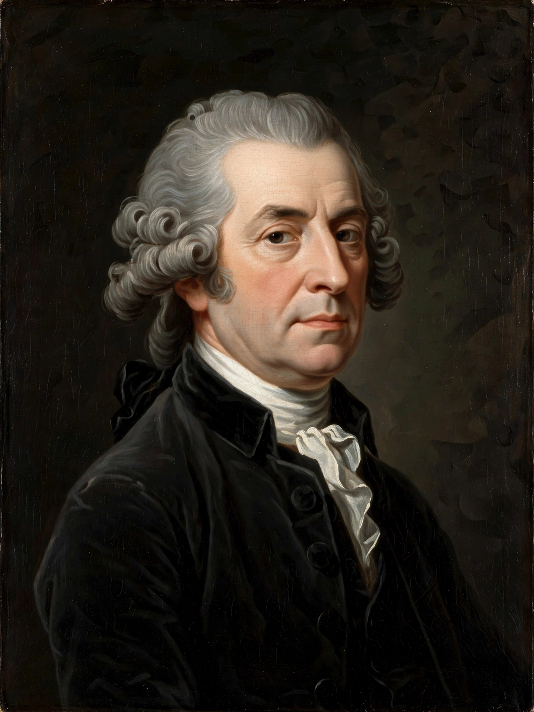

Montesquieu
From Wikipedia, the free encyclopedia
Charles-Louis de Secondat, Baron de La Brède et de Montesquieu (18 January 1689 – 10 February 1755), generally referred to simply as Montesquieu, was a French judge, man of letters, historian and political philosopher. He is the principal source of the theory of separation of powers, which is implemented in many constitutions throughout the world.

Montesquieu (1689–1755), author of The Spirit of Law.
His anonymously published The Spirit of Law (1748), a treatise on political theory, examined law in relation to the nature of governments, customs, climate, commerce and religion. He articulated the view that to prevent abuse of power, the legislative, executive and judicial powers must be held by different bodies — “power must check power”. Earlier, his Persian Letters (1721), a satirical epistolary novel, had mocked French institutions through the eyes of Persian travellers; he also championed the (largely idealised) English constitution as a model of liberty.
Life
Born at the Château de La Brède near Bordeaux into a family of the robe nobility, Montesquieu inherited the office of president of the Bordeaux parlement, which he later sold. His travels in Europe, including two years in England (1729–1731), exposed him to parliamentary government and the writings of Locke. He was elected to the Académie française in 1728. His later years were spent revising his works; he died in Paris in 1755, nearly blind.
Influence
The Spirit of Law was placed on the Catholic Church's Index of Prohibited Books yet circulated widely; it was quoted extensively by the American founders, and Federalist No. 47 calls Montesquieu “the oracle” of the separation doctrine. His typology of governments — republics animated by virtue, monarchies by honour, despotisms by fear — and his analysis of the influence of climate and commerce made him a founder of comparative politics and of sociology before the term existed.
See also
Separation of powers · The Spirit of Law · Checks and balances · John Locke